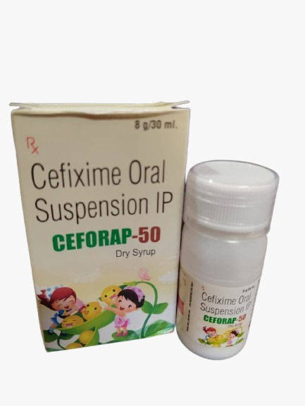

For better efficacy and Safety with... Superior Cephalosporin.
Available in dry syrup format for precise pediatric dosing.
Provides broad-spectrum action against pediatric pathogens. Cefixime effectively reduces high white blood cell counts and body temperature associated with infections.
Low side-effect profile makes it ideal for young patients.
As effective as standard BID therapies in reducing fever due to UTIs.